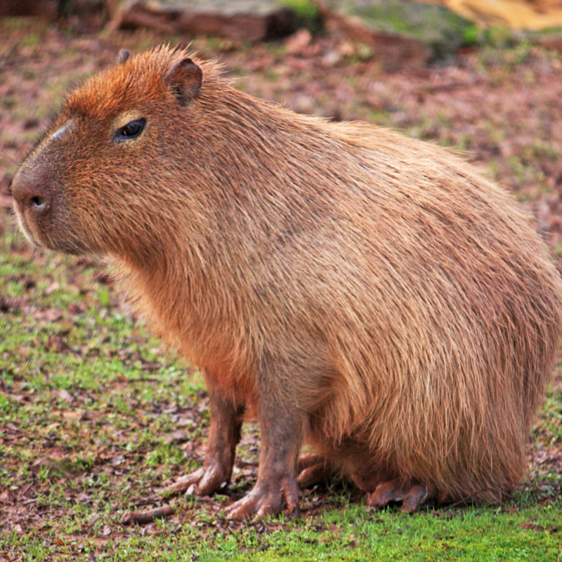

De Amazone is bekend door zijn vele dieren en planten. Er worden wel elke dag nieuwe dieren en planten ontdekt. Wetenschappers ontdekken steeds meer planten en dieren omdat hun leefgebied steeds kleiner wordt, zo worden dieren gedwongen steeds dichter bij elkaar te leven.
| diersoort | afbeelding | latijnse naam | categorie rode lijst van IUCN |
|---|---|---|---|
| Spiny leaf frog | Nyctixalus spinosus | ||
| Candango mouse | Juscelinomys candango | ||
| Spix's macaw | Cyanopsitta spixii | ||
| Pied Tamarin | Saguinus bicolor |  |
|
| pygmy three-toed sloth | Bradypus pygmaeus | |
|
| Giant River Otter | Pteronura brasiliensis | ||
| vinaceous-breasted amazon | Amazona vinacea | ||
| white-cheeked spider monkey | Ateles marginatus | ||
| white-bellied spider monkey | Ateles belzebuth | ||
| jaguar | Panthera onca | ||
| Red Howler Monkey | Alouatta seniculus | ||
| Capybara |  | Hydrochoerus hydrochaeris | |
| Collared Anteater | Tamandua tetradactyla | ||
| Toucan |  |
Ramphastidae |